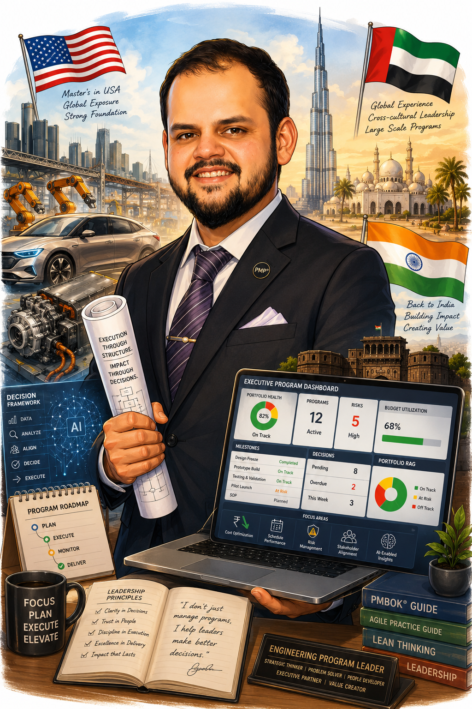

Jaideep Phatak
Not Just Describe.
The systems on this site demonstrate how I approach complex program delivery: the structures, review cadence, decision logic, and reporting discipline that keep cross-functional teams moving. Across 10+ years in the industry, including more than 7 years leading engineering initiatives across the USA, UAE, and India, I built these demonstrations to make my operating model visible-not merely described.

Built from delivery experience, not templates.
These demonstrations are not reproductions of proprietary company dashboards. They are original builds created to show how I structure ambiguity, translate program complexity into leadership-ready views, and turn scattered execution data into usable decisions.
Every dashboard, workflow, AI assistant, and reporting framework was built from first principles based on experience leading global engineering programs across automotive, engineering, and product development organizations.
They are intended to show not only what I have delivered-but how I think, how I organize execution, and how I help leadership move with confidence.
The sections that follow show that thinking in practice.
Built for decisions, not decoration.
- Reporting noise, removedEach view is designed around the few signals that matter, not every metric that happens to exist.
- Decisions before statusThe modules are built around what leadership needs to decide next, not a passive log of what happened last week.
- Structure behind the screenStage gates, escalation paths, ownership, timing, and financial signals are connected into one working model.
- Thinking made visibleThe artifacts show how I organize ambiguous delivery problems before the first conversation, not after it.
Most of a program manager's real work is invisible in a resume: the judgment behind which metrics matter, how risks are escalated, where decisions get stuck, and what leadership needs to see before a review becomes useful.
These demonstrations are built from patterns I have used across program delivery, engineering operations, portfolio reviews, and reporting environments. They are not case studies from one employer and they do not reproduce proprietary systems.
The purpose is simple: make my approach to complex delivery visible before the first conversation.
Every command center includes an Executive Decision Assistant.
The command centers on this site are more than interactive dashboards. Each one includes an Executive Decision Assistant, scoped specifically to the governance model, metrics, risks, and executive reporting logic of that command center.
Rather than simply browsing dashboards, visitors can ask executive questions directly:
- What is the biggest program risk?
- Should leadership approve this Gate Review?
- Which initiative needs executive attention first?
- What is driving schedule variance?
The assistant answers using only the information contained within that command center — demonstrating how decision support can stay grounded in structured program data rather than open-ended conversation.
Scoped to the dashboard
Every answer is grounded in that command center's own metrics, risks, decisions, and milestones.
Structured for executives
Responses follow an executive format: summary, evidence, recommendation, and confidence.
Bounded by design
Out-of-scope questions are declined rather than answered generically.
Explore four ways to run complex work.
Program Command Center
A steering-committee view for complex delivery: health, milestones, actions, financial oversight, open decisions, and leadership-ready reporting in one place.
Explore Command Center (opens in a new tab)Engineering Control Tower
A technical delivery view across milestones, risks, resources, and actions for engineering teams and cross-regional execution.
Explore Command Center (opens in a new tab)NPD Launch Command Center
A launch-readiness view across stage gates, APQP status, OEM reporting, manufacturing readiness, and product development milestones.
Explore Command Center (opens in a new tab)Portfolio Command Center
A portfolio-level view connecting financial performance, customer programs, strategic priorities, capacity signals, and AI-assisted insights.
Explore Command Center (opens in a new tab)Practical tools for faster governance and better executive decisions.
A growing collection of browser-based tools built to improve prioritization, decision readiness, and governance discipline. Each one runs locally, needs no API key, and turns program data into leadership-ready action — distinct from the full operating views in the Command Centers above.
Executive Risk Prioritizer
Convert a conventional risk register into an executive-ranked action queue using deterministic, local prioritization logic based on business impact, urgency, strategic importance, dependencies, mitigation confidence, and ownership clarity.
Explore Risk PrioritizerRAID Intelligence Analyzer
Transform unstructured meeting notes into an executive-ready view of risks, assumptions, issues, and dependencies — entirely in your browser.
Explore RAID Intelligence AnalyzerExecutive Decision Making
For leaders who need better decisions, not more data.
Create concise executive-ready summaries from project updates, meeting notes, or status reports.
In DevelopmentMeasure approval delays and decision cycle times that slow program execution.
PlannedProgram Governance
Strengthen governance without adding bureaucracy.
Assess delivery, financial, stakeholder, and execution health in one governance view.
In DevelopmentValidate readiness before major gate reviews, steering committees, or approval milestones.
In DevelopmentCommunication
Improve stakeholder communication with less manual effort.
Generate tailored updates for executives, sponsors, customers, and delivery teams.
PlannedTurn project updates into polished weekly or monthly executive status reports.
PlannedIntelligence
Transform project information into actionable insight.
Extract decisions, actions, owners, risks, and follow-ups from meeting transcripts or minutes.
PlannedConvert project data into leadership-ready dashboards with key metrics and visual summaries.
PlannedMore Executive AI Toolkit tools are currently in development. New tools will be added as the platform evolves.
Turn fragmented program reporting into decision-ready executive visibility.
EmbedOps helps leadership see the true state of a program and surface the decisions and risks that need attention - replacing reporting volume with decision clarity. Pune-first, with selected remote engagements.
Client information is treated as confidential and used only for the agreed engagement.
Principles behind how I lead complex work.
Clarity First
Leadership should not have to dig for the signal. I design reviews so health, risk, ownership, and pending decisions are visible quickly and without unnecessary noise.
Decision Support Over Status
A steering committee's time is a scarce asset. I structure reviews around the choices that need leadership input, not around a passive recap of activity.
Systems, Not Trackers
Stage gates, RACI, budget oversight, quality checks, and escalation paths only work when they are connected. I design them as one operating rhythm, not separate documents.
AI With Accountability
I use GenAI to accelerate synthesis, reporting, and review preparation while keeping judgment, ownership, and accountability with the human program leader.
Alignment Across Functions
Complex work moves at the speed of alignment. My role is to reduce dependency friction before it reaches the point of escalation.
Predictability Through Discipline
Reliable delivery comes from structured schedules, clear ownership, early risk visibility, disciplined cost control, and review mechanisms that trigger action in time.
- Based In
- Pune, India
- Experience
- 10+ years, 7+ in complex programs
- Education
- M.S. Mechanical Engineering, Lamar University
B.E. Mechanical Engineering, Savitribai Phule Pune University - Certifications
- PMP® - PMI
AI for Project Management - LinkedIn Learning
Project Management with Microsoft Copilot - LinkedIn
Lean Six Sigma Green Belt - Udemy
Artificial Intelligence for Project Managers - LinkedIn - Domains
- Automotive OEM & Tier-1, Portfolio Governance
A credential and experience summary - for the philosophy behind the work, see Meet the Builder above.
- 10+ years in the industry, 7+ leading global technical programs
- Global automotive and engineering programme delivery
- Cost optimisation and VAVE programme experience
- Led teams of 80+ people across USA, UAE and India
- PMP® Certified
- AI-enabled reporting and leadership dashboards
Let's talk about your next program.
Information shared through these channels is treated as confidential and used only for the conversation or engagement.